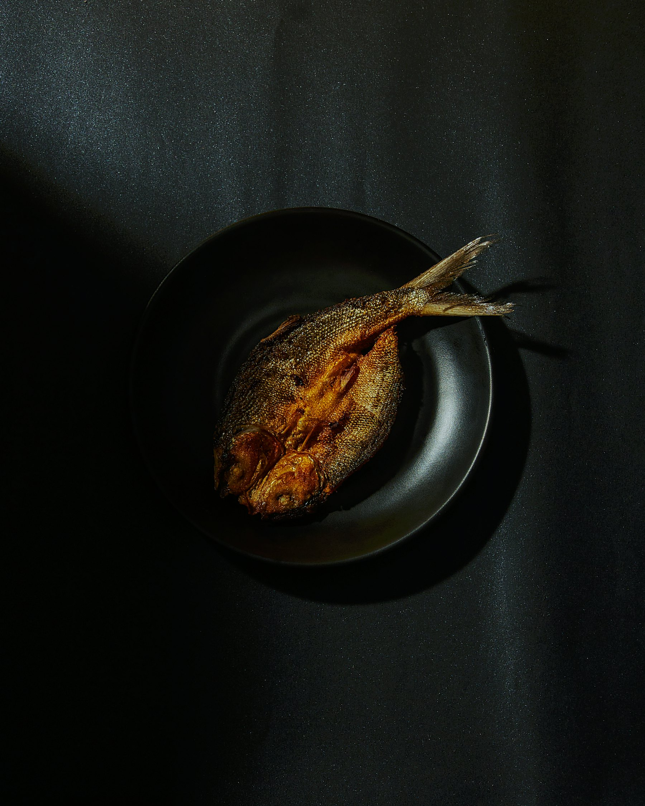

Fisk, råg och lamm lagat över björkeld, under ett granitvalv.
Holvi har 38 platser i en köpmans källare från 1888 i Kronohagen. En vedeld, en kort meny som följer fångsten och ett kök som syns från varje bord.
Öppet tisdag till lördag från 17.00.

Från elden den här veckan
Menyn byts varje tisdag efter vad båtarna och gårdarna har att ge.
-

Sik över björkeld
32 €Brynt smör, inlagd gurka
-

Åländsk lammbog
36 €En, rotselleri bakad i glöden
-

Nötkött från Ruovesi
38 €Rökt bensås, grillad lök

Fyra meter under Elisabetsgatan
Källaren höggs ut 1888 för att hålla en spannmålshandlares lager svalt genom sommaren. Väggarna är av lokal granit, taket består av tre tegelvalv och temperaturen här nere ändras knappt under året.
Elden står där lastluckan förr fanns, så röken går rakt upp och ut, och rummet doftar björk snarare än matos.
- Platser
- 38
- Eld
- Björk hela kvällen
- Meny
- Ny varje tisdag
Bord från 17.00, tisdag till lördag.
Vi håller sex platser vid köksdisken lediga för gäster utan bokning varje kväll. För resten av rummet är det säkrast att boka på fredagar och lördagar.
Boka bord